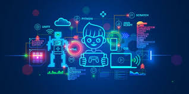

Why Coding Is the Skill of the Future
Published: August 1, 2025
In today’s digital age, coding is more than just a technical skill — it's a language that powers the modern world. At Hands and Minds Computer Academy, our Coding program helps you unlock the tools and knowledge to build software, apps, websites, and more from scratch.
Whether you want to become a software developer, automate business processes, or build your own startup, learning to code gives you the ability to create, innovate, and solve real-world problems. You'll get hands-on with languages like HTML, CSS, JavaScript, Python, and more — guided by experienced instructors.
Choose the path that fits your schedule and ambition:
- 2 Months Certificate Program – ₦188,500
- 4 Months Lower Diploma – ₦208,500
You’ll learn through real coding projects, collaborative exercises, and performance assessments. All our classes are conducted at our modern training center in Navy Estate, Karshi, Abuja, or optionally online for remote learners.
At Hands and Minds Computer Academy, we believe anyone can learn to code — and we're here to guide you every step of the way. Your journey to becoming a software developer, web engineer, or digital creator starts here.
💻 Enroll in Coding